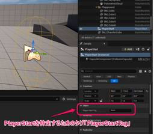

historia Inc – 株式会社ヒストリア
https://historia.co.jp
ゲームの企画・開発・制作協力の株式会社ヒストリアです。UE4やVRの最先端技術を使ってPlayStation®4などのコンシューマーゲームやアーケードゲーム、デジタルコンテンツを創出し、人生観を変えるような体験を提供します。
フィード

[UE5]様々な状況でPlayerStartTagを活用する
historia Inc – 株式会社ヒストリア
執筆バージョン: Unreal Engine 5.5 今回は、プレイヤーの開始位置を決めるアクター「PlayerStart」について、とりわけPlayerStartTagについて話したいと思います。 〇おさらい 以前、弊 […]The post [UE5]様々な状況でPlayerStartTagを活用する first appeared on historia Inc - 株式会社ヒストリア.
3日前

[UE5] Control Rig Metadata を使ってみる
historia Inc – 株式会社ヒストリア
執筆バージョン: Unreal Engine 5.5 はじめに 今回の記事では、Control RigのMetadataノードについてご紹介します。 Control RigのMetadataノードはUE 5.1から付いた […]The post [UE5] Control Rig Metadata を使ってみる first appeared on historia Inc - 株式会社ヒストリア.
10日前
[UE5]MetaSoundsで作るインタラクティブミュージック「縦の遷移」
historia Inc – 株式会社ヒストリア
執筆バージョン: Unreal Engine 5.5 ヘイガイズ！エンジニアの片平です！ 今回は MetaSounds を使用してインタラクティブミュージックの「縦の遷移」を実装する方法をご紹介します。 インタラクティブ […]The post [UE5]MetaSoundsで作るインタラクティブミュージック「縦の遷移」 first appeared on historia Inc - 株式会社ヒストリア.
17日前
【予告】Unreal Engine 5 学習向け作品制作コンテスト「第24回UE5ぷちコン」を7月18日（金）より開催します！
historia Inc – 株式会社ヒストリア
２、３日でサクッと作ってサクッと応募！ “第24回UE5ぷちコン”開催決定！ 開催期間：2025年7月18日(金)～2025年8月31日(日)(9月1日(月)AM10:00)まで！ UE5ぷちコンは、株式会 […]The post 【予告】Unreal Engine 5 学習向け作品制作コンテスト「第24回UE5ぷちコン」を7月18日（金）より開催します！ first appeared on historia Inc - 株式会社ヒストリア.
22日前
[UE5]UE5.6で追加されたバリアントオプション「Combat」を改造して遊んでみよう！
historia Inc – 株式会社ヒストリア
執筆バージョン: Unreal Engine 5.6 こんにちは！ UE5.6で「ThirdPerson」テンプレートのVariantsオプション「Combat」が追加されました。 今回は、初心者向けに少しだけ改造して遊 […]The post [UE5]UE5.6で追加されたバリアントオプション「Combat」を改造して遊んでみよう！ first appeared on historia Inc - 株式会社ヒストリア.
24日前
【技術デモ】リッチ表現×低負荷の新たなHMI技術デモを「Build: Tokyo ’25 for Automotive」（8月5日）にて初展示＆講演します！
historia Inc – 株式会社ヒストリア
ヒストリア・エンタープライズでは自動車業界に向けて、“リッチ表現”と“低処理負荷”を実現した、UE5による新たなHMIの技術デモを開発中です。 正式公開に先立ち、2025年 […]The post 【技術デモ】リッチ表現×低負荷の新たなHMI技術デモを「Build: Tokyo '25 for Automotive」（8月5日）にて初展示＆講演します！ first appeared on historia Inc - 株式会社ヒストリア.
1ヶ月前
[UE5]UE5.6のビューポートツールバーを見てみよう
historia Inc – 株式会社ヒストリア
執筆バージョン: Unreal Engine 5.6 今回は5.6から変わったビューポートツール周りで抑えておきたい点をピックアップしてご紹介します。 ・Transforms tools ・Snapping settin […]The post [UE5]UE5.6のビューポートツールバーを見てみよう first appeared on historia Inc - 株式会社ヒストリア.
1ヶ月前
[UE5] TSRによるマテリアル内のテクスチャアニメーションのゴースト対策について
historia Inc – 株式会社ヒストリア
執筆バージョン: Unreal Engine 5.5 マテリアル内でテクスチャを揺らしたり、回転させたりなど動かすことは多いと思います。 その時に何か滲んでしまうなぁ？となったことはありませんでしょうか？ 今回はその原因 […]The post [UE5] TSRによるマテリアル内のテクスチャアニメーションのゴースト対策について first appeared on historia Inc - 株式会社ヒストリア.
1ヶ月前
[UE5]ポストプロセスマテリアルで霧っぽいのやってみた
historia Inc – 株式会社ヒストリア
執筆バージョン: Unreal Engine 5.4 はじめに 今回の記事は、ポストプロセスマテリアルで「霧っぽいもの作れないかな？」と思って試してみた記録です。 自分なりに調べて理解した内容を、チュートリアル形式で […]The post [UE5]ポストプロセスマテリアルで霧っぽいのやってみた first appeared on historia Inc - 株式会社ヒストリア.
1ヶ月前
[UE5]【続】弾のバリエーションを増やそう！～速射編～
historia Inc – 株式会社ヒストリア
執筆バージョン: Unreal Engine 5.5.3 ◆はじめに こんにちは、エンジニアの山中です。 前回記事ではチャージショット（バースト、同時発射）の実装についてご紹介しましたが 今回は更にバリエーションを増やす […]The post [UE5]【続】弾のバリエーションを増やそう！～速射編～ first appeared on historia Inc - 株式会社ヒストリア.
2ヶ月前